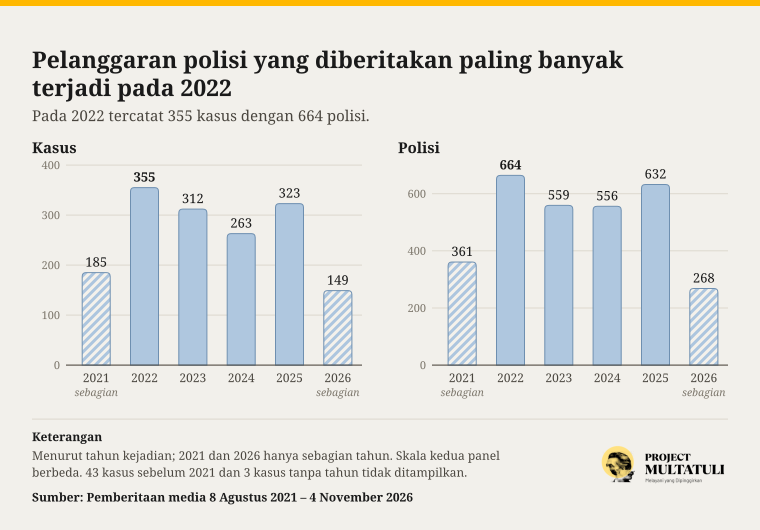
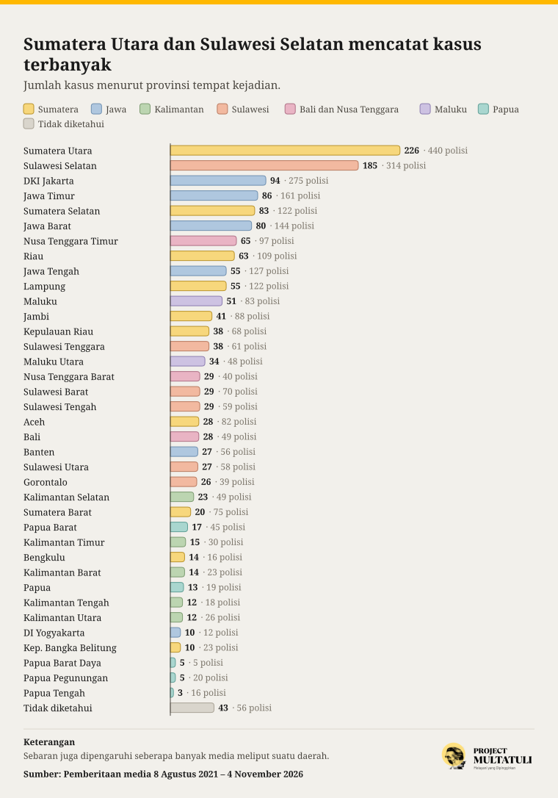
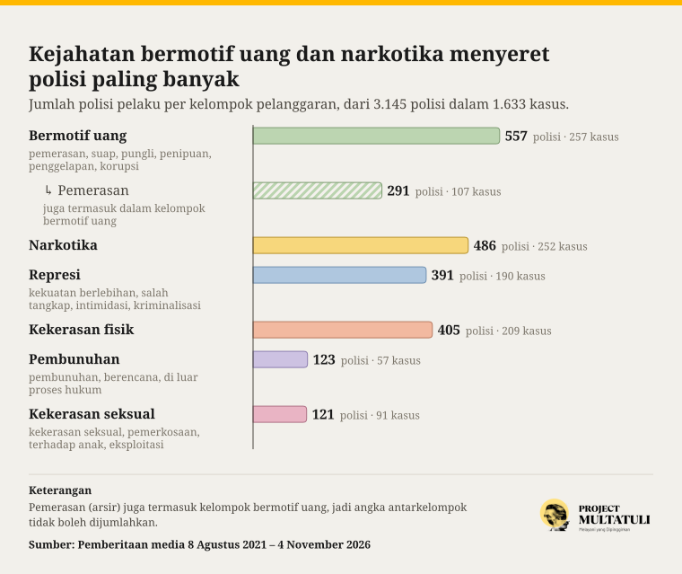
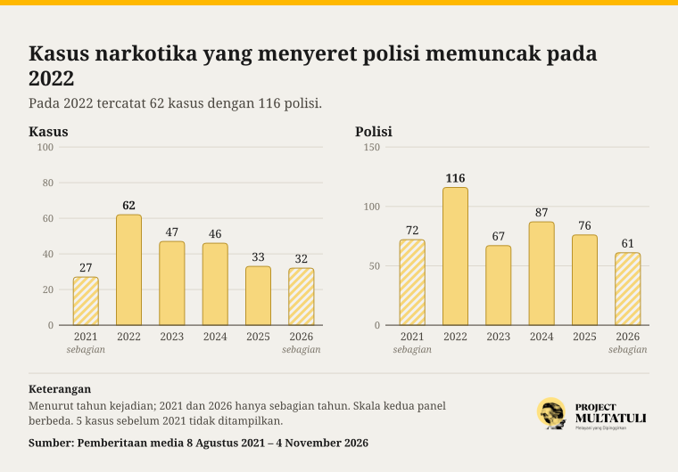
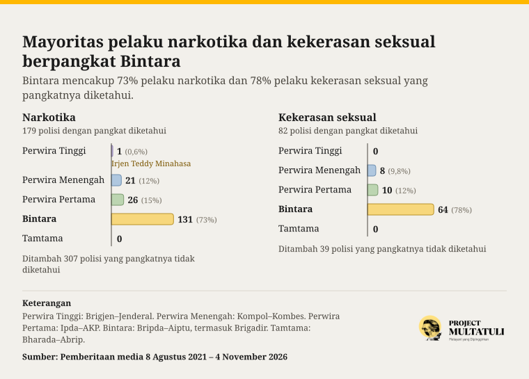
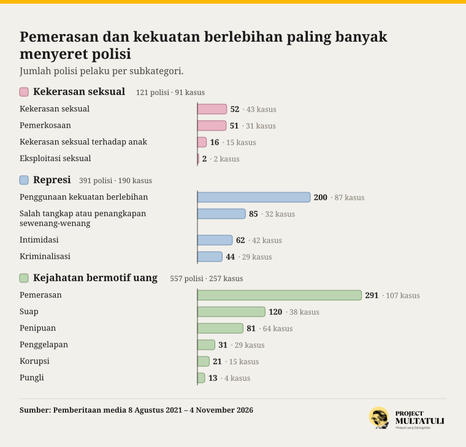
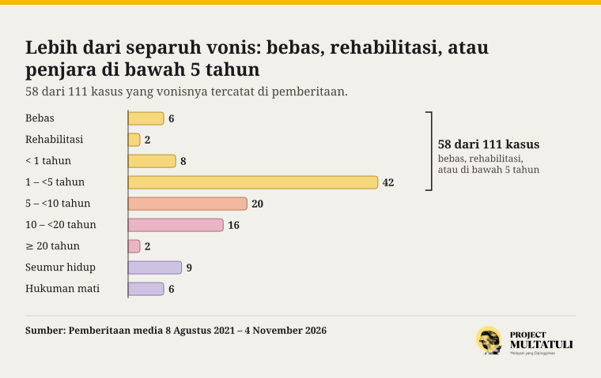
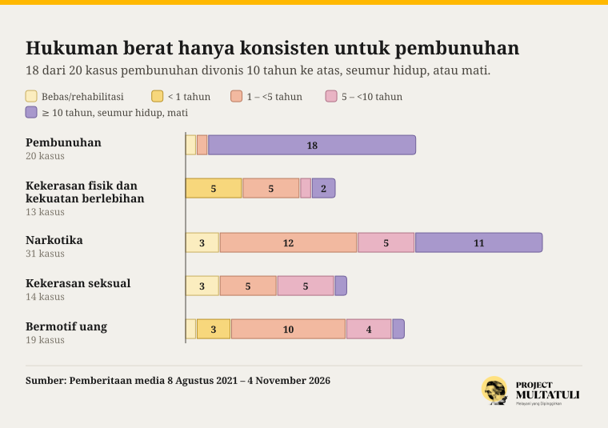

Untuk WordPress
Kode sematan grafik
Setiap kode memakai dua versi SVG. Browser otomatis memakai versi ponsel di layar di bawah 600px dan versi desktop di layar yang lebih lebar. Font sudah tertanam di dalam setiap SVG.
Cara memasang
- Setiap grafik punya dua file:
NN-nama.svg(desktop, di foldersvg/) danNN-nama-ponsel.svg(ponsel, di foldersvg-ponsel/). Unggah keduanya ke Media Library (perlu plugin Safe SVG) atau lewat FTP. Keduanya berakhir di folder yang sama. - Buka salah satu file di Media Library, salin File URL-nya, lalu tempel bagian foldernya (tanpa nama file) di kolom di bawah.
Contoh:
https://situs.org/wp-content/uploads/2026/11. Semua kode di halaman ini langsung menyesuaikan. - Di editor artikel, tambahkan blok Custom HTML, lalu tempel kode grafik. Jangan memakai blok Image, karena blok itu hanya bisa memuat satu file. Akun harus Editor atau Administrator.
- Pratinjau artikel di desktop dan ponsel. Uji satu grafik di draf dulu sebelum memasang semuanya.
Pratinjau di kanan memakai kode yang sama dengan berkas lokal. Ubah lebar jendela browser untuk melihat pergantian versi.
1. Narkotika, pelanggaran etik, dan kekerasan fisik paling sering diberitakan
<picture> <source media="(max-width: 600px)" srcset="https://ALAMAT-SITUS/wp-content/uploads/2026/11/01-jenis-pelanggaran-ponsel.svg"> <img src="https://ALAMAT-SITUS/wp-content/uploads/2026/11/01-jenis-pelanggaran.svg" alt="Narkotika, pelanggaran etik, dan kekerasan fisik paling sering diberitakan" loading="lazy" style="display:block;width:100%;height:auto"> </picture>

2. Pelanggaran polisi yang diberitakan paling banyak terjadi pada 2022
<picture> <source media="(max-width: 600px)" srcset="https://ALAMAT-SITUS/wp-content/uploads/2026/11/02-kasus-per-tahun-ponsel.svg"> <img src="https://ALAMAT-SITUS/wp-content/uploads/2026/11/02-kasus-per-tahun.svg" alt="Pelanggaran polisi yang diberitakan paling banyak terjadi pada 2022" loading="lazy" style="display:block;width:100%;height:auto"> </picture>

3. Bintara mendominasi polisi pelaku yang pangkatnya diketahui
<picture> <source media="(max-width: 600px)" srcset="https://ALAMAT-SITUS/wp-content/uploads/2026/11/03-pangkat-pelaku-ponsel.svg"> <img src="https://ALAMAT-SITUS/wp-content/uploads/2026/11/03-pangkat-pelaku.svg" alt="Bintara mendominasi polisi pelaku yang pangkatnya diketahui" loading="lazy" style="display:block;width:100%;height:auto"> </picture>

4. Sumatera Utara dan Sulawesi Selatan mencatat kasus terbanyak
<picture> <source media="(max-width: 600px)" srcset="https://ALAMAT-SITUS/wp-content/uploads/2026/11/04-wilayah-ponsel.svg"> <img src="https://ALAMAT-SITUS/wp-content/uploads/2026/11/04-wilayah.svg" alt="Sumatera Utara dan Sulawesi Selatan mencatat kasus terbanyak" loading="lazy" style="display:block;width:100%;height:auto"> </picture>

5. Sanksi etik hanya terberitakan di 566 dari 1.633 kasus
<picture> <source media="(max-width: 600px)" srcset="https://ALAMAT-SITUS/wp-content/uploads/2026/11/05-sanksi-etik-ponsel.svg"> <img src="https://ALAMAT-SITUS/wp-content/uploads/2026/11/05-sanksi-etik.svg" alt="Sanksi etik hanya terberitakan di 566 dari 1.633 kasus" loading="lazy" style="display:block;width:100%;height:auto"> </picture>

6. Kejahatan bermotif uang dan narkotika menyeret polisi paling banyak
<picture> <source media="(max-width: 600px)" srcset="https://ALAMAT-SITUS/wp-content/uploads/2026/11/06-polisi-per-kelompok-ponsel.svg"> <img src="https://ALAMAT-SITUS/wp-content/uploads/2026/11/06-polisi-per-kelompok.svg" alt="Kejahatan bermotif uang dan narkotika menyeret polisi paling banyak" loading="lazy" style="display:block;width:100%;height:auto"> </picture>

7. Kasus narkotika yang menyeret polisi memuncak pada 2022
<picture> <source media="(max-width: 600px)" srcset="https://ALAMAT-SITUS/wp-content/uploads/2026/11/07-narkotika-per-tahun-ponsel.svg"> <img src="https://ALAMAT-SITUS/wp-content/uploads/2026/11/07-narkotika-per-tahun.svg" alt="Kasus narkotika yang menyeret polisi memuncak pada 2022" loading="lazy" style="display:block;width:100%;height:auto"> </picture>

8. Mayoritas pelaku narkotika dan kekerasan seksual berpangkat Bintara
<picture> <source media="(max-width: 600px)" srcset="https://ALAMAT-SITUS/wp-content/uploads/2026/11/08-pangkat-narkotika-kekerasan-seksual-ponsel.svg"> <img src="https://ALAMAT-SITUS/wp-content/uploads/2026/11/08-pangkat-narkotika-kekerasan-seksual.svg" alt="Mayoritas pelaku narkotika dan kekerasan seksual berpangkat Bintara" loading="lazy" style="display:block;width:100%;height:auto"> </picture>

9. Pemerasan dan kekuatan berlebihan paling banyak menyeret polisi
<picture> <source media="(max-width: 600px)" srcset="https://ALAMAT-SITUS/wp-content/uploads/2026/11/09-subkategori-ponsel.svg"> <img src="https://ALAMAT-SITUS/wp-content/uploads/2026/11/09-subkategori.svg" alt="Pemerasan dan kekuatan berlebihan paling banyak menyeret polisi" loading="lazy" style="display:block;width:100%;height:auto"> </picture>

10. Lebih dari separuh vonis: bebas, rehabilitasi, atau penjara di bawah 5 tahun
<picture> <source media="(max-width: 600px)" srcset="https://ALAMAT-SITUS/wp-content/uploads/2026/11/10-sebaran-vonis-ponsel.svg"> <img src="https://ALAMAT-SITUS/wp-content/uploads/2026/11/10-sebaran-vonis.svg" alt="Lebih dari separuh vonis: bebas, rehabilitasi, atau penjara di bawah 5 tahun" loading="lazy" style="display:block;width:100%;height:auto"> </picture>

11. Hukuman berat hanya konsisten untuk pembunuhan
<picture> <source media="(max-width: 600px)" srcset="https://ALAMAT-SITUS/wp-content/uploads/2026/11/11-vonis-per-kategori-ponsel.svg"> <img src="https://ALAMAT-SITUS/wp-content/uploads/2026/11/11-vonis-per-kategori.svg" alt="Hukuman berat hanya konsisten untuk pembunuhan" loading="lazy" style="display:block;width:100%;height:auto"> </picture>
